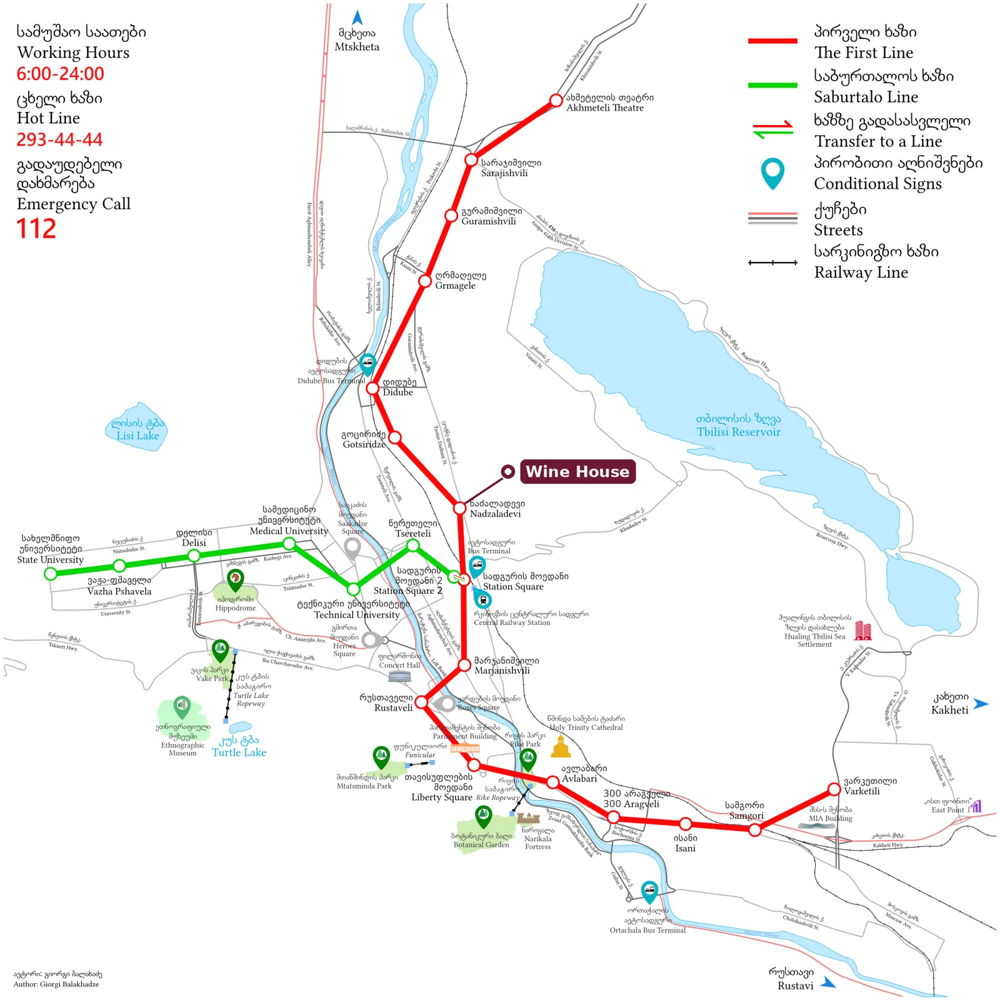

სატრანსპორტო გზამკვლევი
როგორ მოხვიდეთ Wine House-ში
გიორგი სააკაძის ქუჩა 67, თბილისი 0180. ექვსი წუთი ფეხით მეტრო ნაძალადევიდან, ერთი გაჩერება ცენტრალური რკინიგზის სადგურიდან.
მთავარი
| უახლოესი მეტრო | ნაძალადევი, 1-ლი ხაზი, 400 მ, დაახლოებით 6 წუთი ფეხით |
|---|---|
| უახლოესი გაჩერებები | დეპოს ქუჩა და მე-10 საჯარო სკოლა, ჭიშკრიდან დაახლოებით 100 მ |
| ცენტრალური რკინიგზის სადგური | 1 გაჩერება მეტროთი (სადგურის მოედანი) ან 1,8 კმ, დაახლოებით 22 წუთი ფეხით |
| ქალაქის ცენტრი | 3–4 გაჩერება მეტროთი (რუსთაველი, თავისუფლების მოედანი), დაახლოებით 10 წუთი |
| თბილისის აეროპორტი | 25 კმ. ტაქსით 30–40 წუთი, ავტობუსით დაახლოებით 60 წუთი |
ტარიფები და გადახდა
- ერთი მგზავრობა მეტროთი, ავტობუსით ან მიკროავტობუსით 1 ლარი ღირს და 90 წუთის განმავლობაში უფასო გადაჯდომებს მოიცავს.
- გადახდა: მიადეთ უკონტაქტო საბანკო ბარათი წამკითხველს მეტროს ტურნიკეტზე ან ავტობუსში. ავტობუსებში ნაღდი ფული არ მიიღება. უცხოური ბარათებიდან შესაძლოა დაახლოებით 1,5 ლარი ჩამოიჭრას.
- ან იყიდეთ Metromoney ბარათი 2 ლარად მეტროს ნებისმიერ სალაროში და შეავსეთ.
- მეტრო მუშაობს დაახლოებით 06:00-დან შუაღამემდე. ავტობუსების უმეტესობა 23:00-მდე დადის.
- აპლიკაციები: Google რუკები თბილისის ტრანსპორტს რეალურ დროში აჩვენებს. ტაქსი: Bolt და Yandex Go.
მეტროს 1-ლი ხაზი: საჭირო სადგურები

დიდუბე · გოცირიძე · ნაძალადევი · სადგურის მოედანი · მარჯანიშვილი · რუსთაველი · თავისუფლების მოედანი · ავლაბარი
| ნაძალადევიდან | გაჩერება | რა არის იქ |
|---|---|---|
| სადგურის მოედანი | 1 | ცენტრალური რკინიგზის სადგური, აეროპორტის 337-ე ავტობუსი, ქუთაისის შატლი, 2-ე ხაზი |
| მარჯანიშვილი | 2 | აღმაშენებლის გამზირი, რესტორნები, ფაბრიკა |
| რუსთაველი | 3 | რუსთაველის გამზირი, მუზეუმები, ოპერა |
| თავისუფლების მოედანი | 4 | ძველი ქალაქი, გოგირდის აბანოები, ნარიყალას საბაგირო |
| ავლაბარი | 5 | სამების საკათედრო ტაძარი |
| დიდუბე | 2, ჩრდილოეთით | ავტოსადგური: მარშრუტკები მცხეთაში, გორში, ყაზბეგში, ქუთაისში, ბორჯომში |
ცენტრისკენ ჩაჯექით მატარებელში ვარკეთილის მიმართულებით. უკან, სახლისკენ — ახმეტელის თეატრის მიმართულებით.
თბილისის საერთაშორისო აეროპორტიდან
ტაქსი, ყველაზე მარტივი გზა
ჩამოფრენის შემდეგ გახსენით Bolt ან Yandex Go და მიუთითეთ „Wine House, სააკაძის 67". ორიენტირი: 30–40 ლარი და 30–40 წუთი. აეროპორტის Wi-Fi ზოგჯერ აპლიკაციებს ბლოკავს, ამიტომ მობილური ინტერნეტი გამოიყენეთ. სიმ-ბარათების ჯიხური ჩამოსვლის დარბაზში 24 საათი მუშაობს. დარბაზში თავად მომსვლელ მძღოლებს თავაზიანად უარი უთხარით.
337-ე ავტობუსი, ყველაზე იაფი გზა
გაჩერება პირდაპირ ჩამოსვლის დარბაზის გასასვლელთანაა. ავტობუსები დადის დაახლოებით 07:00-დან 23:00-მდე, ყოველ 15–20 წუთში და სადგურის მოედნამდე დაახლოებით ერთ საათში ჩადის. მგზავრობა 1 ლარი, მიადეთ საბანკო ბარათი. სადგურის მოედანზე ჩადით მეტროში და ერთი გაჩერება იმგზავრეთ ახმეტელის თეატრის მიმართულებით ნაძალადევამდე, შემდეგ ექვსი წუთი ფეხით. ან აიყვანეთ Bolt დაახლოებით 5 ლარად.
2026 წლის ივლისიდან ნოემბრამდე რუსთაველის გამზირი ტრანსპორტისთვის დახურულია, ამიტომ 337-ე ავტობუსი ცენტრში შემოვლითი მარშრუტით მოძრაობს. ბოლო გაჩერება კვლავ სადგურის მოედანია.
ტრანსფერი მძღოლით
მარინას შეუძლია მძღოლის მოწყობა, რომელიც ჩამოსვლის დარბაზში დაგხვდებათ. მისწერეთ რეისის ნომერი WhatsApp-ში.
ქუთაისის აეროპორტიდან
ავტობუსები ყველა რეისს ხვდება და დაშვებიდან დაახლოებით ერთ საათში გადის. გზა 3,5–4,5 საათს გრძელდება და 25–30 ლარი ღირს. ბილეთი წინასწარ ონლაინ იყიდეთ.
- Georgian Bus ჩერდება თბილისის ცენტრალური სადგურის უკან, მეტრო სადგურის მოედანთან. საუკეთესო ვარიანტი Wine House-სთვის: იქიდან ერთი გაჩერება მეტროთი ან ტაქსი 5 ლარად.
- Omnibus და Metro Georgia მარშრუტს ამთავრებს ორთაჭალის ავტოსადგურზე, ქალაქის მეორე მხარეს. იქიდან Bolt დაახლოებით 15 ლარი ღირს.
ცენტრალური რკინიგზის სადგურიდან
- მეტრო: სადგურის მოედანი, 1-ლი ხაზი ახმეტელის თეატრის მიმართულებით, ჩამოდით პირველ გაჩერებაზე — ნაძალადევი.
- ფეხით: 1,8 კმ, დაახლოებით 22 წუთი.
- ტაქსი: 5–7 ლარი.
საღამოს ცენტრიდან სახლში
- მეტრო თავისუფლების მოედნიდან, რუსთაველიდან ან მარჯანიშვილიდან ახმეტელის თეატრის მიმართულებით ნაძალადევამდე. ბოლო მატარებელი ცენტრიდან შუაღამემდე ცოტა ხნით ადრე გადის.
- შუაღამის შემდეგ Bolt ძველი ქალაქიდან დაახლოებით 10–15 ლარი ღირს.
- 395-ე ავტობუსი დადის ბარათაშვილის ქუჩასა (ძველი ქალაქის კიდე) და გლდანს შორის და სახლთან ახლოს ჩერდება.
ავტობუსები სახლიდან 100 მეტრში მდებარე გაჩერებებზე
გაჩერებები დეპოს ქუჩა და მე-10 საჯარო სკოლა ქუჩის ორივე მხარეს. მიმართულება გადაამოწმეთ გაჩერების აბრაზე ან Google რუკებში.
| მარშრუტი | სად დადის | გამოსადეგია |
|---|---|---|
| 362 | სადგურის მოედანი — ზღვის უბანი | ცენტრალური რკინიგზის სადგური |
| 317, 370 | ფიროსმანის მოედანი — ჩრდილოეთი უბნები | ფიროსმანის მოედანი სადგურის გვერდითაა |
| 395 | ბარათაშვილის ქუჩა — დუმბაძის გამზირი | პირდაპირ ძველი ქალაქის კიდემდე |
| 333 | აღმაშენებლის ხეივანი — ვაზისუბანი | მარცხენა სანაპიროზე, ქალაქის აღმოსავლეთით |
| 436, 507, 517, 529 | სადგურის მოედნის მიკროავტობუსების ტერმინალი — ჩრდილოეთი უბნები | ცენტრალური რკინიგზის სადგური |
თბილისში მარშრუტების ნომრები ხანდახან იცვლება. თუ აქ მითითებული ნომერი გაჩერების აბრას არ ემთხვევა, აბრას ენდეთ.
მოგზაურობა საქართველოში
- დიდუბის ავტოსადგური, ორი გაჩერება მეტროთი ჩრდილოეთით: მარშრუტკები მცხეთაში (20 წთ), გორში, ყაზბეგში (3 სთ), ქუთაისსა (3,5 სთ) და ბორჯომში. მძღოლს ნაღდი ფულით გადაუხადეთ.
- ცენტრალური სადგური: მატარებლები ბათუმში, ქუთაისსა და ზუგდიდში, ღამის მატარებელი ერევანში. ბილეთები tkt.ge-ზე ან სალაროში.
- ორთაჭალის ავტოსადგური: საერთაშორისო ავტობუსები ერევანსა და ბაქოში. Bolt დაახლოებით 15 ლარი.
- კახეთი, ღვინის რეგიონი: ჰკითხეთ მარინას, ის ღვინის დღისთვის მძღოლს მოგიწყობთ.
უკვე ახლოს ხართ?
მოწერეთ +995 555 517 494 WhatsApp-ში ან Telegram-ში ან დარეკეთ, როცა ახლოს იქნებით, და ჭიშკართან დაგხვდებიან. შესვლა 14:00-დან შუაღამემდე.